The challenge
Build a habit
around play.
I pioneered a new Free-to-Play vertical to improve Average Played Days (APD), a critical engagement KPI. The work combined new game concepts with a unified interface and a centralized hub that made games easier to discover and navigate.
I led research and development around user insights and market opportunities, while keeping familiar interactions comfortable for existing players.
Impact
+36% Average Played Days.
I designed a unified F2P experience bringing four games into a dedicated hub. Product improvements were associated with a 36% increase in Average Played Days, supporting deeper player engagement.
Research & player insight
Understand the player.
Then shape the experience.
I organized focus groups and user-testing sessions to understand player preferences and expectations. Personas included less tech-savvy users, with accessibility and clear interactions central to the design.
I tracked behavioral data and player feedback to refine navigation and interface interactions. Research and market opportunities informed the new game concepts.
Spin Wheel
From discovery
to the first spin.
I brought free games onto the app homepage and redesigned the hub to give a growing game portfolio a clear home. Players can open Super Spin directly from the homepage in one tap, or explore the hub and launch it in two.
The journey keeps the featured game and jackpot visible, then moves into the wheel and a reward confirmation with a clear next action.
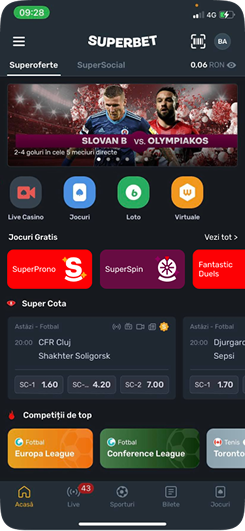
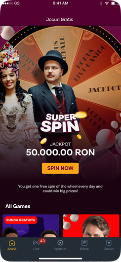
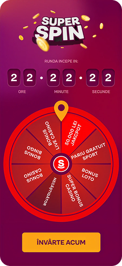
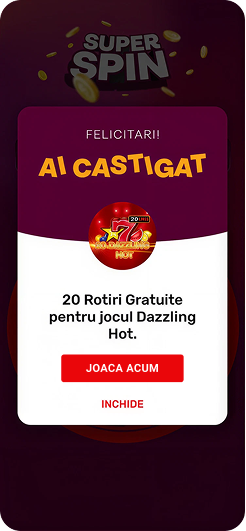
Predictions
From the next round
to the final result.
Super Prono puts the prize, countdown and prediction action together. Submission confirmation closes the task, while performance and results screens bring players back to their predictions.
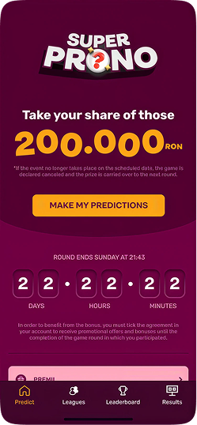
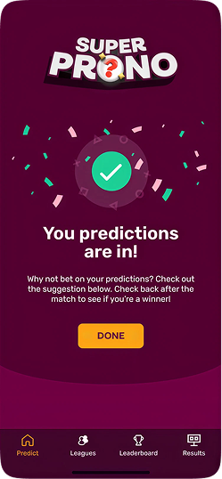
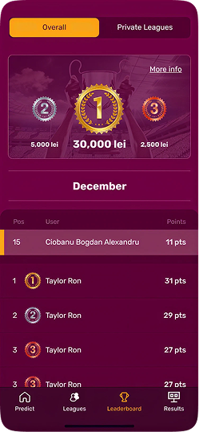
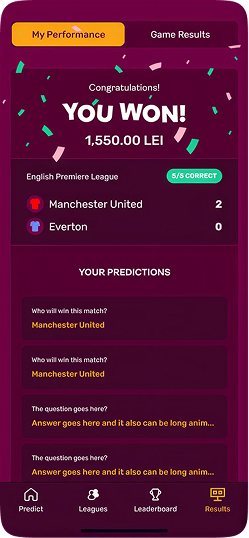
Live quiz
A shared live
game experience.
SuperQuiz brings the host, prize and questions into one visual language. Live chat keeps the audience present throughout the experience.
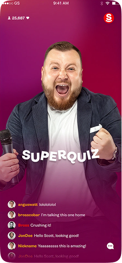
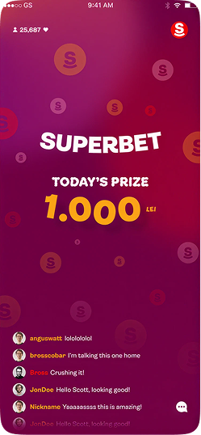
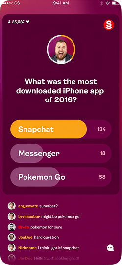
More ways to play
Predict, compete
and play together.
Fantastic Duels brings player comparisons and scoring into the prediction flow. Players can create a private league or join with an invite code, compare their position on the leaderboard and review their results.
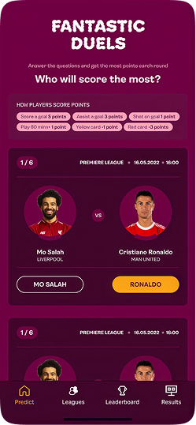
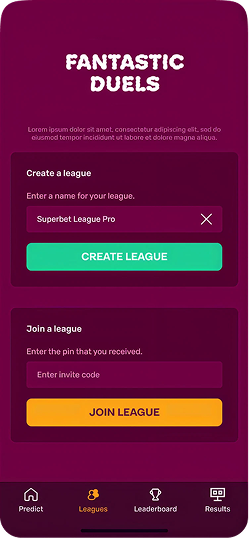
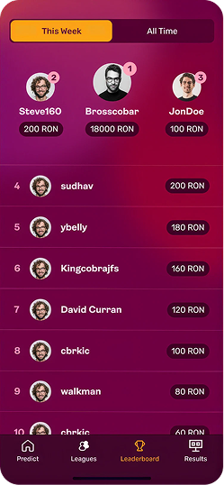

Competition & community
See your progress.
Play with your mates.
Standings show weekly, all-time and overall performance. Private leagues let players create a group or join with an invite code, with prize information available in context.

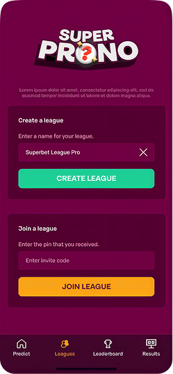
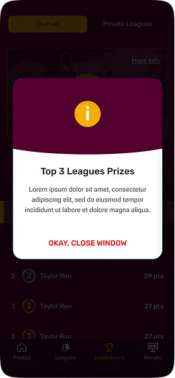
The hub
One home
for all the games.
I designed a unified interface and centralized hub for the F2P portfolio, improving discovery and navigation. Inspired by content-led browsing, the hub combines prominent game artwork, individual game pages and horizontal and vertical navigation.
Homepage entry points, visible jackpots and cross-posted categories connect the games across the product.
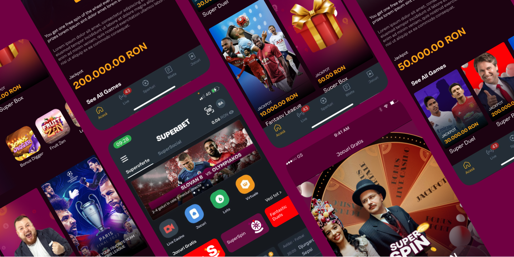
Casino homepage
Six months of
strategic redesign.
Alongside the F2P work, I led a comprehensive casino homepage redesign for web and mobile applications. I benchmarked leading European casino platforms and conducted competitive analysis, focus groups and user testing.
I created multiple design variations informed by market trends and player behavior, collaborating with the international product team to align the experience with business strategy.
Collaboration & delivery
Build across teams
and borders.
I traveled to Croatia and Ireland to collaborate with design teams and third-party providers. I also established partnerships with European gaming providers to expand the F2P portfolio.
The work connected research, concept development, interface design and international collaboration around a shared engagement goal.